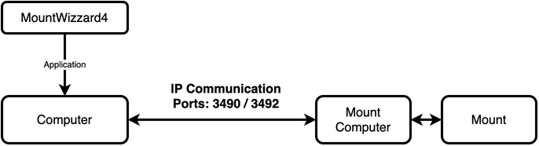

Welcome to MountWizzard4!¶
MW4 is a general utility for 10micron users for improving the workflow for astronomy work. It runs on Windows11, Windows10 (Win7 should be fine, but it will be not tested), Mac OSX (beginning from 10.12 to 11.x) including M1 variants if Rosetta is used and Linux (Ubuntu from 16.04 to 20.04). If you have some knowledge around Raspberry Pi’s and other SOC, you might be able to install MW4 on a RPi3+, RPi4.
Before starting¶
First let us have a look to the basic architecture: MW4 is an application installed on your external computer which is connected to the mount computer via an IP connection. The best choice is to use a wired connection. As the 10micron mounts also support a serial line, please be reminded MW4 does not! Many of the features are handled on the mount computer itself and MW4 does the GUI frontend for the user by using the command protocol provided by 10micron.
{kind=link}
The basic idea is that MW4 will try to generate “digital twin” for the mount. All parameter changes for the mount will be sent to it and changes of it’s state are polled to make status visible in MW4. Therefore regular polling of data is needed.
Overview¶
Beside this documentation there is a youtube channel available with descriptions, previews, explanations:
https://www.youtube.com/channel/UCJD-5qdLEcBTCugltqw1hXA
For full operation MW4 supports several frameworks: INDI / INDIGO, ASCOM, Alpaca and in addition Sequence Generator Pro and N.I.N.A. as camera device.
Known limitations¶
MW4 does support python 3.8 - 3.10 right now. The reason for that is the lack of precompiled packages. Some features are limited to windows as they need the original 10micron updater program for execution.
On windows please check if you are working in a 32bit or 64bit environment. You need to choose the ASCOM setup (drivers etc.) and the python install accordingly.
If you are using the 10micron updater features on windows, MW4 remote controls the updater application. Please do not interrupt this automation.
Reporting issues¶
To have an eye on your setup here are some topics which you could check:
Mount connection available and stable. Wifi might have performance problems. Look for right network settings in mount and local setup.
Good counter check is review settings, status bars, message window if something is going wrong.
To improve quality and usability any feedback is highly welcome! To maintain a good transparency and professional work for my, please respect the following recommendations how to feed back.
Note
Please report issues / bugs here:
https://github.com/mworion/MountWizzard4/issues.
And if you have feature requests discussions or for all other topics of interest there is a good place to start here:
In case of a bug report please have a good description (maybe a screenshot if it‘s related to GUI) and add the log file(s). Normally you just could drop the log file (or PNG in case of a screen shot) directly to the webpage issues on GitHub. In some cases GitHub does not accept the file format (unfortunately for example FITs files). I this case, please zip them and drop the zipped file. This will work. If you have multiple files, please don‘t zip them to one file! I need them separated and zipped causes more work.
If changes are made due to a feedback, new releases will have a link to the closed issues on GitHub.